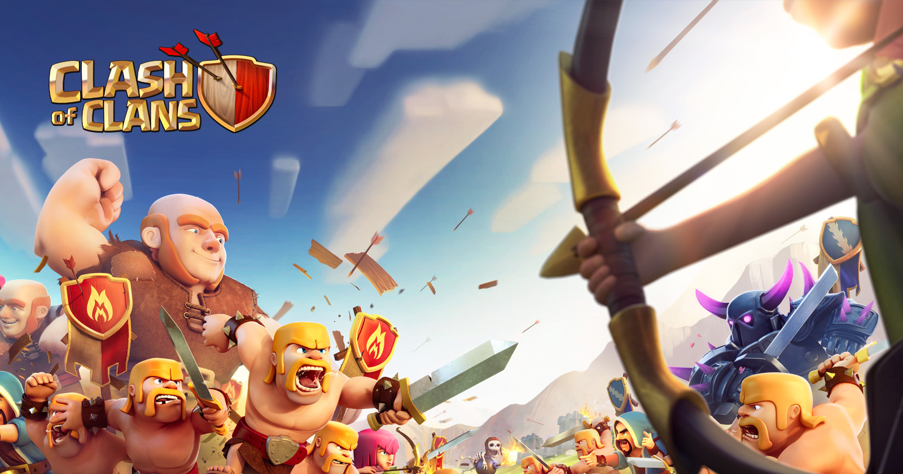

TOP 10 ANDROID GAMES
1.BGMI(BATTLE GROUND MOBILE INDIA)
Battlegrounds Mobile India is an online multiplayer battle royale game developed and published by Krafton. The game is exclusively for the Indian users.
The game released on 2 July 2021 for Android devices, and on 18 August 2021 for iOS devices.
Initial release date: 2 July 2021
Developer: KRAFTON
Publisher: KRAFTON
Genre: Battle royale game
Mode: Multiplayer video game
Developer: KRAFTON
Platforms: iOS, Android
Download Link:-https://play.google.com/store/apps/details?id=com.pubg.imobile
2. E FOOTBALL PES 2021
Efootball PES 2021 is an updated version of last year's title, providing the latest player data and Club rosters
Initial release date: 15 September 2020
Series: eFootball
Original author: Konami
Developers: PES Productions, Konami Digital Entertainment
Publishers: Konami, Konami Digital Entertainment
Platforms: PlayStation 4, Microsoft Windows
Genres: Football, Sports Video Game, Simulation Game, Sports
Download Link:-https://play.google.com/store/apps/details?id=jp.konami.pesam&hl=en_IN&gl=US
3.ASPHALT 9: LEGENDS
Asphalt 9: Legends is a 2018 racing video game developed by Gameloft Barcelona and published by Gameloft. Released on July 25, 2018, it is the ninth main installment in the Asphalt series.
Initial release date: 22 March 2018
Designer: Marc García
Publisher: Gameloft
Platforms: Android, Microsoft Windows, Xbox One, Nintendo Switch, more
Developers: Gameloft, Gameloft Iberica S.A.U.
Engines: Bullet, Jet Engine
Modes: Single-player video game, Multiplayer video game
Download Link:- https://play.google.com/store/apps/details?id=com.gameloft.android.ANMP.GloftA9HM&hl=en_IN&gl=US
4.CLASH OF CLANS

Clash of Clans is a free-to-play mobile strategy video game developed and published by Finnish game developer Supercell. The game was released for iOS platforms on August 2, 2012, and on Google Play for Android on October 7, 2013.
Initial release date: 2 August 2012
Developer: Supercell
Publisher: Supercell
Genre: Real-time strategy
Original author: Supercell
Modes: Single-player video game, Multiplayer video game
Platforms: Android, iOS
Download Link:-https://play.google.com/store/apps/details?id=com.supercell.clashofclans&hl=en_IN&gl=US
5.COD ( CALL OF DUTY MOBILE )
 Call of Duty: Mobile is a free-to-play shooter game developed by TiMi Studio Group and published by Activision for Android and iOS.
Call of Duty: Mobile is a free-to-play shooter game developed by TiMi Studio Group and published by Activision for Android and iOS.
The game was released on 1 October 2019. It saw one of the largest mobile game launches in history, generating over US$480 million with 270 million downloads within a year.
Initial release date: 1 October 2019
Publisher: Activision
Engine: Unity
Series: Call of Duty
Mode: Multiplayer video game
Developers: TiMi Studio Group, PROXIMA BETA, Infinity Ward
Awards: BAFTA Games Award for EE Mobile Game of the Year
Download Link:-https://play.google.com/store/apps/details?id=com.activision.callofduty.shooter&hl=en_IN&gl=US
6.FIFA MOBILE
 FIFA Mobile is an association football simulation video game developed by EA Mobile and EA Canada and published by EA Sports for iOS and Android.
FIFA Mobile is an association football simulation video game developed by EA Mobile and EA Canada and published by EA Sports for iOS and Android.
It was released on 11 October 2016, for iOS and Android. Microsoft Windows was also included until 2017. It was announced on August 16, 2016, during Gamescom 2016.
Initial release date: 11 October 2016
Series: FIFA
Mode: Multiplayer video game
Developers: EA Sports, EA Vancouver, EA Mobile
Publishers: Electronic Arts, EA Sports, NEXON Co., Ltd.
Nominations: Satellite Award for Outstanding Mobile Game
Platforms: Android, iOS,
Download Link:-https://play.google.com/store/apps/details?id=com.ea.gp.fifamobile&hl=en_IN&gl=US
7.AMONG US
Among Us is a 2018 online multiplayer social deduction game developed and published by American game studio Innersloth.
The game was inspired by the party game Mafia and the science fiction horror film The Thing.
Initial release date: 15 June 2018
Designer: Marcus Bromander
Engine: Unity
Publisher: InnerSloth LLC
Awards: Kids’ Choice Award for Favorite Videogame, more
Platforms: PlayStation 4, Android, Xbox Series X and Series S, Xbox One, Microsoft Windows, more
Developers: InnerSloth LLC, PlayEveryWare
Download Link:-https://play.google.com/store/apps/details?id=com.innersloth.spacemafia&hl=en_IN&gl=US
8.LUDO KING
Ludo King is an Indian free-to-play mobile game application developed by Indian studio Gametion Technologies Pvt Ltd, based in Mumbai, India.
Gametion is owned by Vikash Jaiswal. It is developed on the Unity game engine and is available on Android, iOS, Kindle, Windows Phone and Microsoft Windows platforms.
Initial release date: 20 February 2016
Publisher: Gametion
Engine: Unity
Mode: Multiplayer video game
Developer: Gametion
Original author: Gametion
Platforms: Android, Microsoft Windows, iOS, Windows 10, macOS, Android TV
Download Link:-https://play.google.com/store/apps/details?id=com.ludo.king&hl=en_IN&gl=US
9.SUBWAY SURFACE
Subway Surfers is an endless runner mobile game co-developed by Kiloo and SYBO Games, private companies based in Denmark.
It is available on Android, iOS, Kindle, and Windows Phone platforms and uses the Unity game engine.
Initial release date: 23 May 2012
Engine: Unity
Mode: Single-player video game
Genre: Endless Running
Platforms: Android, iOS, Microsoft Windows, macOS, Amazon Kindle, Windows Phone, more
Developers: Kiloo, SYBO Games
Publishers: Kiloo, SYBO Games
Download Link:-https://play.google.com/store/apps/details?id=com.kiloo.subwaysurf&hl=en_IN&gl=US
10.POKEMON GO
 PlayerUnknown's Battlegrounds (also known as PUBG: Battlegrounds) is an online multiplayer battle royale game developed and published by PUBG Corporation
, a subsidiary of Bluehole.
PlayerUnknown's Battlegrounds (also known as PUBG: Battlegrounds) is an online multiplayer battle royale game developed and published by PUBG Corporation
, a subsidiary of Bluehole.
The game is based on previous mods that were created by Brendan "PlayerUnknown" Greene for other games,
inspired by the 2000 Japanese film Battle Royale, and expanded into a standalone game under Greene's creative direction.
In the game, up to one hundred players parachute onto an island and scavenge for weapons and equipment to kill others while avoiding getting killed themselves.
The available safe area of the game's map decreases in size over time, directing surviving players into tighter areas to force encounters.
The last player or team standing wins the round.
Download Link:-https://play.google.com/store/apps/details?id=com.nianticlabs.pokemongo&hl=en_IN&gl=US
THANKS FOR VISITING OUR WEBSITE